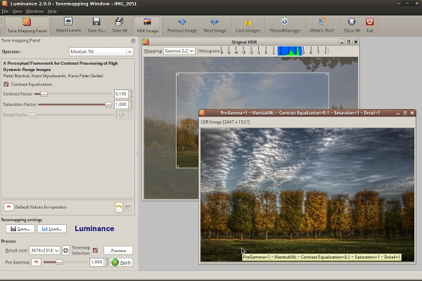

To start tonemapping an HDR file click the "Tonemap HDR image" button in the mail toolbar or use Ctrl+T shortcut. This will open a new dialog.
The dialog contains a menu bar, a toolbar, a status bar that displays advanced tooltips, a sidebar with various options and an area for tonemapped images.

The tone mapping step first applies to the HDR the gamma value specified by the pregamma value, then the tone mapping operator is applied.
Adjusting pregamma is an optional step, so you can safely start with picking an operator. The available operators are listed in a combobox on top of Tone Mapping Panel. Most useful operators are listed first. The last two operators, Ashikhmin and Pattanaik, have less practical use for photography, but can be of interest for robotic vision specialists.
Having chosen the operator, tweak its settings, choose resulting size and click Apply button in the bottom to tonemap an HDR image to an LDR image. Please see the "Tonemapping operators reference" chapter for details on using a particular operator.
Because three of nine available operators (both Mantiuks and Fattal) are gradient domain operators that cannot provide consistent results on all result sizes by design, Luminance HDR has no preview function. However you can click the HDR Image button in the toolbar, drag a rectangle to select a small portion of the original image and enable the "Tonemap Selection" checkbox on the Tonemapping Panel to try your settings on just that part of the image. Then, when results are satisfying, disable the checkbox and process the whole image.
By default windows of every new tonemapped LDR image are maximized. If you wish to compare several results with different settings, unmaximize the window of the last tonemapped image, click Lock Images button in the toolbar and use navigation widget in the lower right corner of an image to pan around full-size version. Note that contents of every image window will be synced.
Previous Image and Next Image buttons in the toolbar are most useful for switching between several results when image windows are maximized.
Sometimes the tonemapped LDR image is either too bright or too dark. You can adjust brightness using Levels dialog (Adjust Levels button in the toolbar) that works just like in GIMP, Krita, Photoshop or any similar raster graphics editor with the only exception that it works on luminance channel only.
If you have a lot of pictures shot in same lighting conditions or just wish to save current tonemapping settings for future use, you can save them to a text file. Use "Save..." button in the Tone Mapping Panel for that. Such a file contains:
Please note that since version 1.8.4 the application (at the time named Qtpfsgui) uses a new file format which doesn't contain the postgamma setting.